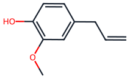

Destilación por arrastre de vapor
Por qué un aceite que hierve a 176 °C sale con el vapor por debajo de 100 °C, por qué la planta saca decenas de veces menos aceite del que permite el equilibrio y cómo se dimensiona un extractor a partir de un ensayo.
El arrastre de vapor es la operación con que la industria saca de las plantas los aceites que huelen a lavanda, a menta, a eucalipto o a clavo. Se apoya en un equilibrio sencillo, el de dos líquidos que no se mezclan, y en un fenómeno de transporte que en la práctica manda más que el equilibrio: la hidrodifusión. Esta lectura recorre los dos y termina en lo que el ingeniero necesita para diseñar, que es convertir un ensayo de rendimiento contra tiempo en un extractor con su carga, su caudal de vapor y su tiempo de lote.
- Explicar por qué una mezcla de agua y un aceite inmiscible hierve por debajo de la temperatura de ebullición de cada líquido, y calcular esa temperatura con Antoine a cualquier presión
- Aplicar la regla de las fases al sistema de dos líquidos inmiscibles con su vapor
- Calcular la relación de equilibrio entre la masa de aceite y la de vapor
- Comparar la hidrodestilación, la destilación con agua y vapor y el arrastre con vapor vivo
- Describir la hidrodifusión y explicar por qué la relación real de aceite por kilo de vapor queda decenas de veces por debajo de la de equilibrio
- Ajustar e interpretar los modelos de primer orden y de dos etapas en un ensayo de rendimiento contra tiempo
- Dimensionar un extractor de lecho fijo a partir de un ensayo piloto: carga por lote, lecho, caudal de vapor, tiempo de lote y lotes por día
En esta lectura
- Para qué sirve el arrastre de vapor y de dónde viene
- El equilibrio de dos líquidos que no se mezclan
- Tres formas de destilar una planta
- Lo que manda en la práctica: la hidrodifusión
- Modelos de rendimiento contra tiempo
- Variables de diseño y de operación
- El equipo
- Del ensayo al extractor: ejemplo resuelto
- Los datos del curso
- Conclusiones
- Referencias
A lo largo del texto encontrará marcadores numerados como este. Pase el cursor por encima (o tóquelo) y aparecerá la fuente completa. El listado ordenado vive al final, en Referencias. La sección 9 presenta el conjunto de datos de rendimiento contra tiempo que el curso publica con esta lectura.
1. Para qué sirve el arrastre de vapor y de dónde viene
Buena parte de los compuestos que dan aroma a las plantas son líquidos orgánicos que hierven entre 150 y 260 °C y que casi no se disuelven en agua. Llevarlos a su punto de ebullición para destilarlos los dañaría: se oxidan, se isomerizan, se polimerizan o se hidrolizan, y el aceite pierde justo lo que lo hace valioso. El arrastre de vapor resuelve el problema por un camino lateral. En lugar de calentar el aceite hasta que hierva solo, lo pone en contacto con vapor de agua, y la mezcla de los dos hierve por debajo de 100 °C a presión atmosférica. El vapor se lleva el aceite, se condensa, y como los dos líquidos no se mezclan, el aceite se separa del agua por densidad.
Con ese principio trabajan industrias muy distintas:
- Aceites esenciales. Es el uso principal. Se destilan hojas, flores, semillas, cortezas, raíces y frutos: lavanda, menta, eucalipto, romero, clavo, cilantro, cítricos y cientos de especies más. Tosta Machado y sus colegas estiman que más del 93 % del volumen mundial de aceites esenciales se obtiene por destilación con vapor.
- Sabores y fragancias. Los aceites son materia prima de la perfumería, de los alimentos y bebidas, de los productos de aseo y de la farmacia. El agua condensada que sale con ellos, el hidrolato, también se vende: el agua de rosas es un hidrolato.
- Purificación de compuestos orgánicos. En el laboratorio y en la química fina se usa para separar un compuesto de alto punto de ebullición, inmiscible con agua, de impurezas que no son volátiles, sin llevarlo a la temperatura a la que se degrada. Treybal lo ilustra con la etilanilina, y es una práctica clásica de química orgánica aislar así el eugenol del clavo o el limoneno de la cáscara de naranja.
- Parientes industriales. El despojamiento con vapor (steam stripping) usa el mismo efecto, la presión parcial que el vapor le quita al volátil, para sacar ácidos grasos libres y olores de los aceites vegetales en la desodorización, o solventes de una corriente líquida.
Tabla 1. Algunos aceites esenciales que se obtienen por destilación. Se dan los componentes principales y la práctica habitual, sin rendimientos: el contenido de aceite cambia con la variedad, la cosecha y el método, y en un diseño se mide.
| Material | Parte que se destila | Componentes principales | Cómo se destila y por qué |
|---|---|---|---|
| Lavanda | Sumidades florales | Linalol, acetato de linalilo | Vapor vivo. El agua hirviendo prolongada hidroliza el acetato de linalilo, que es el éster que da calidad al aceite. |
| Menta piperita | Hojas y tallos | Mentol, mentona | Vapor vivo. El aceite está en tricomas glandulares sobre la superficie de la hoja y sale rápido. |
| Eucalipto | Hojas | 1,8-cineol | Vapor vivo. Las glándulas son cavidades dentro de la hoja; picar ayuda. |
| Romero | Hojas y tallos tiernos | 1,8-cineol, alcanfor, α-pineno | Vapor vivo. |
| Clavo de olor | Botones florales secos | Eugenol | Hidrodestilación o vapor. El aceite es más denso que el agua y su relación de equilibrio es baja (sección 2). |
| Naranja, limón, lima | Cáscara | Limoneno (más del 90 % en la naranja dulce) | La mayor parte se obtiene por prensado en frío; el arrastre da los aceites destilados y aprovecha la cáscara que queda de la industria de jugos. |
| Rosa | Pétalos | Citronelol, geraniol, alcohol feniletílico | Hidrodestilación con retorno del agua (cohobación). Los pétalos se apelmazan con vapor vivo, y el alcohol feniletílico se queda disuelto en el agua de rosas. |
| Anís, hinojo, cilantro | Frutos secos («semillas») | Anetol (anís, hinojo), linalol (cilantro) | Vapor vivo, después de moler. El aceite está en canales internos y la semilla entera entrega muy despacio (sección 4). |
Un poco de historia
La palabra alambique viene del árabe al-inbīq, y este del griego ámbix, «copa». En el mundo islámico medieval la destilación de aguas aromáticas, como el agua de rosas, era ya un oficio con mercado, y de ahí pasó a la farmacia europea. En 1500 Hieronymus Brunschwig publicó en Estrasburgo uno de los primeros libros impresos dedicados por entero a destilar plantas, un manual para boticarios. Durante siglos el producto fue el agua aromática y el aceite que flotaba sobre ella era casi un subproducto; con el vapor generado en calderas aparte y los condensadores de agua corriente, el aceite pasó a ser el objetivo.

El siglo XX le dio a la operación su instrumento de medida. En 1928 J. F. Clevenger describió un aparato de vidrio para determinar el aceite volátil de una muestra vegetal por hidrodestilación, con un tubo graduado donde se lee el aceite y un retorno del agua al matraz. Sus descendientes siguen siendo el método con que se mide cuánto aceite tiene una materia prima, y por eso aparecen otra vez en la sección 7. La ingeniería de la operación, en cambio, se ordenó más tarde: el tratado de Guenther fijó a mediados de siglo la clasificación de las tres formas de destilar y la explicación de la hidrodifusión, y los modelos matemáticos del lecho llegaron con el siglo XXI.
2. El equilibrio de dos líquidos que no se mezclan
El agua y un aceite esencial como el limoneno son prácticamente inmiscibles. Puestos juntos forman dos fases líquidas, y cada una es casi el líquido puro. Eso tiene una consecuencia directa sobre el vapor: cada líquido evapora como si el otro no estuviera, porque su fracción molar en su propia fase es prácticamente uno. La presión parcial del agua en el vapor es la presión de vapor del agua pura a esa temperatura, y la del aceite es la del aceite puro. Por la ley de Dalton, la presión total es la suma:
La mezcla hierve cuando esa suma alcanza la presión del sistema. Como la suma de dos presiones de vapor es mayor que cada una, se llega a la presión del sistema a una temperatura más baja que la de ebullición de cualquiera de los dos líquidos solos. Esto no depende de cuánta agua ni de cuánto aceite haya, siempre que existan las dos fases líquidas.
Las presiones de vapor con Antoine
Para calcular cada presión de vapor se usa la ecuación de Antoine. Esta lectura usa las mismas constantes que la calculadora del reto del curso, para que los números coincidan:
- T: temperatura en °C. Las constantes del agua son las clásicas, válidas entre 1 y 100 °C; para pasar de mmHg a kPa se multiplica por 0,133322.
- Las del limoneno están ajustadas a su punto de ebullición normal, 176 °C, y a su presión de vapor a 25 °C. Son orientativas y no reemplazan el modelo termodinámico de un simulador.
A 101,3 kPa la suma de las dos presiones llega a la del sistema a 97,6 °C: en ese punto el agua aporta 92,9 kPa y el limoneno 8,4 kPa. En Bogotá, a unos 75 kPa, la mezcla hierve a 89,6 °C, cuando el agua sola herviría a 91,8 °C y el limoneno solo a 164,4 °C. La Figura 2 construye ese resultado con las curvas.
La regla de las fases
La regla de las fases de Gibbs cuenta las variables intensivas que se pueden fijar a voluntad:
Hay dos componentes (agua y aceite) y tres fases (dos líquidas y el vapor), así que queda un solo grado de libertad. Fijada la presión, quedan fijadas la temperatura de ebullición y la composición del vapor, cualquiera que sea la proporción de los dos líquidos. Por eso, mientras haya aceite libre en contacto con el agua, la temperatura no cambia; cuando el aceite libre se acaba, el sistema pierde una fase, gana un grado de libertad y la temperatura sube hasta la de ebullición del agua sola.
Cuánto aceite lleva cada kilo de vapor
En el vapor, el cociente de fracciones molares es el cociente de presiones parciales, y pasando a masa con las masas molares queda la relación que usa todo el diseño:
Para el limoneno a 101,3 kPa: (8,43 × 136,24)/(92,89 × 18,02) = 0,69 kg de aceite por kg de vapor. Es una cifra enorme: si el vapor saliera saturado de aceite, cada kilo de vapor arrastraría casi 700 g. La masa molar del aceite trabaja a favor, porque una molécula de limoneno pesa 7,6 veces lo que una de agua, y por eso un aceite que aporta solo el 8 % de las moles del vapor aporta el 41 % de su masa.
Calculadora del equilibrio de arrastre
Escoja el aceite y la presión del extractor. La calculadora busca la temperatura a la que la suma de las presiones de vapor iguala la presión, y con ella la composición del vapor y la relación de equilibrio. Los campos aceptan coma o punto decimal.
Fuera del intervalo en que se ajustaron las constantes de Antoine de este compuesto: tome el resultado como una extrapolación.
Limoneno: las constantes del reto del curso. α-Pineno y eugenol: constantes de Antoine de la base de datos del NIST, con p en bar y T en K, válidas entre 19 y 156 °C para el α-pineno y entre 78 y 254 °C para el eugenol. El agua, en los tres casos, con las constantes clásicas de arriba.
El aceite pesa, pero lo que cuenta es su presión de vapor
La Tabla 2 compara tres compuestos de aceites esenciales a 101,3 kPa. El α-pineno, el monoterpeno de los pinos y del romero, hierve 20 °C por debajo del limoneno y arrastra el doble por kilo de vapor. El eugenol, el fenol que da el olor del clavo, hierve a 254 °C: a 100 °C su presión de vapor es apenas 0,44 kPa, el vapor que sale de la mezcla es 99,6 % agua en moles y cada kilo de vapor puede llevar como mucho 40 g de eugenol, diecisiete veces menos que de limoneno. Su masa molar más alta no alcanza a compensarlo. Es la razón termodinámica por la que los aceites ricos en fenoles y en sesquiterpenos piden mucho más vapor y tiempos más largos.
Tabla 2. Equilibrio de arrastre a 101,3 kPa para tres compuestos de aceites esenciales. Temperatura de ebullición de la mezcla con agua y relación de equilibrio calculadas con las ecuaciones de Antoine de la calculadora.
| Compuesto | M (g/mol) | Hierve solo a | p° a 100 °C | La mezcla hierve a | Relación de equilibrio |
|---|---|---|---|---|---|
| Limoneno | 136,24 | 176 °C | 9,3 kPa | 97,6 °C | 0,69 kg/kg |
| α-Pineno | 136,23 | 156 °C | 19,2 kPa | 95,2 °C | 1,43 kg/kg |
| Eugenol | 164,20 | 254 °C | 0,44 kPa | 99,9 °C | 0,040 kg/kg |
 (R)-LimonenoC10H16 · cítricos
(R)-LimonenoC10H16 · cítricos
EugenolC10H12O2 · clavo de olorCon la calculadora, lleve el limoneno a 50 kPa: la mezcla hierve a 79,4 °C, pero la relación de equilibrio baja a 0,64 kg/kg, porque la presión de vapor del aceite cae con la temperatura más rápido que la del agua. El vacío protege los compuestos sensibles al calor y no ahorra vapor. Para subir la relación hay que subir la temperatura del aceite, con vapor a más presión o con vapor sobrecalentado, y eso cuesta degradación y, en una carga vegetal, la seca: el tejido necesita agua para entregar su aceite (sección 4).
La temperatura de tres fases, 97,6 °C a 1 atm, es la de un sistema donde hay aceite libre en contacto con agua y el vapor sale saturado de los dos. En un extractor el vapor sale muy lejos de saturarse de aceite (sección 4), la presión parcial del aceite en la cabeza es de décimas de kPa y el termómetro marca casi la temperatura de ebullición del agua sola a esa presión. No use la temperatura de la cabeza para comprobar el equilibrio: úsela para saber a qué presión opera el extractor y si el vapor llega saturado o sobrecalentado.
3. Tres formas de destilar una planta
El equilibrio es el mismo en todos los equipos; lo que cambia es cómo se pone el vapor en contacto con el material. Guenther ordenó la práctica en tres modalidades que siguen siendo la referencia, y la Figura 4 las pone lado a lado.
Deslice la figura hacia los lados para verla completa.
Tabla 3. Comparación de las tres modalidades.
| Modalidad | Ventajas | Defectos | Dónde se usa |
|---|---|---|---|
| Hidrodestilación | El equipo más simple y barato. Sirve para materiales que se apelmazan o se pegan con vapor vivo (pétalos, polvos finos) y para pequeños productores sin caldera. Es la base del método de laboratorio (Clevenger). | Contacto largo con agua hirviendo: hidroliza ésteres y favorece otras reacciones. Riesgo de quemar la carga contra el fondo caliente. Calienta toda el agua además del material, así que gasta más energía y es lenta. El control del caudal de vapor es pobre. | Rosa, flores delicadas, laboratorio, producción artesanal. |
| Con agua y vapor | La carga no toca el agua hirviendo: menos hidrólisis y nada quemado. El vapor llega saturado y húmedo, lo que mantiene hidratado el tejido. Equipo sencillo, sin caldera aparte. | Vapor a baja presión y caudal limitado por el fuego. Si el agua hierve con fuerza puede salpicar la carga. El tiempo de lote es más largo que con vapor vivo. | Hierbas y hojas en destilerías pequeñas y medianas. |
| Con vapor vivo | Caudal y presión regulables desde la caldera; lotes más cortos; una caldera puede servir a varios extractores. Es la modalidad de escala industrial. | Necesita caldera, aislamiento y control. El vapor seco o sobrecalentado puede secar la carga y frenar la hidrodifusión. Con caudal alto aparecen canales y arrastre de gotas (sección 6). | Lavanda, menta, eucalipto, romero, semillas molidas, la mayor parte de la industria. |
Tres criterios deciden entre ellas. El primero es la calidad: la hidrólisis del acetato de linalilo en la lavanda, que lo convierte en linalol y ácido acético, es el ejemplo clásico de lo que el agua hirviendo le hace a un aceite rico en ésteres, y es la razón por la que la lavanda fina se destila con vapor. El segundo es el consumo de vapor: en la hidrodestilación el calor calienta también la masa de agua, y el vapor vivo permite poner exactamente el caudal que el lecho necesita. El tercero es la naturaleza del material: hay cargas que con vapor vivo se compactan en una masa impermeable, y entonces la hidrodestilación es la única que funciona.
Algunos componentes oxigenados del aceite se disuelven en el agua condensada y se perderían con el hidrolato. La cohobación devuelve ese hidrolato al recipiente para que se destile otra vez; el Clevenger la hace de forma automática con su brazo de retorno. En el agua de rosas buena parte del alcohol feniletílico se queda disuelta, y por eso la rosa se destila con cohobación. Qué hacer con el hidrolato (purgarlo, venderlo o devolverlo) es una decisión de diseño que se toma junto con el decantador florentino, en la semana 9.
4. Lo que manda en la práctica: la hidrodifusión
Si el equilibrio mandara, un extractor sería un aparato pequeño. Con 0,69 kg de limoneno por kilo de vapor, una tonelada de material con 1 % de aceite soltaría sus 10 kg con unos 15 kg de vapor. Las plantas reales gastan decenas de veces más. El equilibrio dice cuánto aceite podría llevar el vapor si lo encontrara libre; no dice cuánto aceite encuentra. Y en una planta el aceite casi nunca está libre: está guardado en estructuras secretoras que hay que abrir o atravesar.
Dónde guarda la planta su aceite
- Tricomas glandulares, pelos secretores sobre la superficie de hojas y flores, con el aceite bajo una cutícula delgada. Es el caso de la menta, la lavanda y la albahaca: el aceite está cerca de la superficie y sale rápido.
- Cavidades secretoras, bolsas de aceite dentro del tejido. La cáscara de los cítricos las tiene en su capa exterior, el flavedo, y la hoja de eucalipto en su interior. Picar o desgarrar las abre.
- Canales secretores que recorren el fruto de las umbelíferas (anís, hinojo, cilantro, comino). Con la semilla entera el aceite tiene que atravesar todo el tejido.
- Células oleíferas dispersas en raíces, rizomas, maderas y cortezas, donde el aceite está repartido y lejos de cualquier superficie. Son los materiales más lentos de destilar.
Cómo sale el aceite
Guenther describió el mecanismo con el nombre de hidrodifusión, y los modelos modernos lo conservan. Ocurre en cuatro tiempos, y en un lecho los cuatro avanzan de abajo hacia arriba:
- Calentamiento. El vapor que entra frío al lecho encuentra material a temperatura ambiente y condensa sobre él. Ese condensado le cede su calor latente y lo calienta hasta la temperatura del vapor. Se forma un frente de condensación que sube por el lecho; por debajo del frente el material ya está caliente y mojado, por encima sigue frío. Hasta que el frente llega arriba no sale vapor del extractor, y la primera gota de destilado aparece después de un tiempo muerto t0.
- Hidratación y ruptura. El agua condensada hidrata y ablanda el tejido. Las glándulas que el picado ya rompió exponen su aceite, y otras revientan con el calor y la presión del tejido hinchado.
- Lavado. El aceite que quedó sobre las superficies sale con el vapor en minutos. Es la etapa rápida, y es la única en que el vapor se acerca, sin alcanzarlo, a lo que permite el equilibrio.
- Difusión. El aceite de las glándulas intactas se disuelve en pequeña cantidad en el agua que empapa las paredes celulares y migra por difusión hasta la superficie, donde el vapor lo recoge. Es la etapa lenta, y la controla el tejido, no el vapor.
Deslice la figura hacia los lados para verla completa.
Por qué la planta saca decenas de veces menos que el equilibrio
Con el mecanismo a la vista, la brecha deja de ser un misterio. Se suman cuatro efectos:
- El vapor pasa rápido y casi no toca aceite libre. Con una velocidad superficial de unos 5 cm/s, el vapor atraviesa un metro de lecho en unos veinte segundos, y la mayor parte viaja por los huecos sin rozar una superficie con aceite. Sale lejos de saturarse.
- Después del lavado manda el tejido. Cuando el aceite de las superficies se acaba, la velocidad con que aparece aceite nuevo la fija la difusión dentro del material. El vapor sigue entrando al mismo caudal, así que cada kilo adicional lleva menos aceite que el anterior.
- Parte del vapor no llega arriba. El que calienta la carga y el recipiente, y el que repone las pérdidas por las paredes, se cuenta en el consumo y no lleva aceite.
- Canalización. El vapor busca los caminos de menor resistencia y deja zonas del lecho sin tocar, más aún si el lecho está mal cargado o compactado.
En el ejemplo de esta lectura y en los datos del curso, el promedio de un lote queda entre unos pocos gramos y una veintena de gramos de aceite por kilo de vapor, frente a varios cientos que permite el equilibrio. La Figura 6 arma la curva de rendimiento de un ensayo y muestra cómo cae, minuto a minuto, el aceite que lleva cada kilo de vapor.
Sovová y Aleksovski estimaron para la semilla entera de cilantro una difusividad efectiva del aceite de unos 1,7 × 10⁻¹¹ m²/s. Para una esfera de radio R, el término dominante de la solución de difusión decae con la constante k ≈ π² D_ef / R². Con R = 1,5 mm sale k ≈ 0,0045 min⁻¹, una constante de tiempo de casi cuatro horas; moliendo a R = 0,5 mm, k ≈ 0,040 min⁻¹ y unos 25 minutos. Reducir el radio a la tercera parte acelera la etapa lenta nueve veces. Es el mismo argumento que lleva a desgarrar una cáscara o a picar una hoja, con el límite que pone la compactación del lecho (sección 6).
5. Modelos de rendimiento contra tiempo
La hidrodifusión no se predice desde las propiedades del aceite: depende de la anatomía del material, de cómo se picó y de cómo se cargó el lecho. Por eso el diseño parte de un ensayo. Se carga un extractor piloto, se abre el vapor y se mide el aceite acumulado en el receptor a intervalos regulares, junto con el vapor alimentado. Con esa curva se ajusta un modelo, y el modelo es lo que se lleva a la escala de planta.
El modelo de primer orden
El más sencillo supone que la velocidad de salida es proporcional al aceite que queda en el material:
- Y(t): aceite acumulado por unidad de carga, en % de la masa de material (base húmeda o seca, según se declare) o en g por kg.
- Y∞: aceite recuperable si el lote durara indefinidamente. Suele quedar por debajo del contenido total que mide un Clevenger.
- k: constante de velocidad, en min⁻¹. t0: tiempo muerto, el de la primera gota.
Si el modelo vale, ln(1 − Y/Y∞) contra t es una recta de pendiente −k. Es una buena prueba de diagnóstico: en la mayoría de los materiales picados esa gráfica no da una recta sino dos, una empinada al principio y otra más tendida después.
El modelo de dos etapas: lavado y difusión
Las dos rectas son las dos etapas de la hidrodifusión, y el modelo que las representa supone dos fracciones de aceite que salen al mismo tiempo, cada una con su constante:
- f: fracción del aceite recuperable que sale por lavado. Crece al picar más fino, porque hay más glándulas rotas.
- k1: constante del lavado. Depende del contacto entre el vapor y las superficies, así que sube con el vapor por kilo de carga.
- k2: constante de la difusión, del orden de D_ef/L², con L la dimensión que el aceite tiene que recorrer. Depende del material y del picado, y casi nada del vapor.
Cuando el lavado es mucho más rápido que el intervalo de muestreo, el primer término desaparece casi enseguida y el modelo se reduce a Y = Y∞ [1 − (1 − f) exp(−k2 τ)], un lavado instantáneo seguido de difusión. Milojević y colaboradores compararon estas formas y otras en la hidrodestilación de varias plantas y encontraron que la de lavado y difusión simultáneos es la que mejor ajusta en conjunto. Detrás está la misma imagen que el modelo físico de Sovová y Aleksovski, con una población de células rotas que se vacía rápido y otra de células intactas que entrega por difusión. Para el arrastre con vapor vivo en lecho hay modelos que siguen el lecho a lo alto, con la difusión dentro del sólido y el transporte en el vapor, como los de Cassel y colaboradores para romero, albahaca y lavanda y el de Cerpa, Mato y Cocero para el lavandín; Romdhane y Tizaoui modelaron la cinética de una unidad de arrastre de anís. Para dimensionar a partir de un ensayo basta casi siempre la forma empírica de dos exponenciales con su tiempo muerto: es la más sencilla que separa las dos etapas, y sus parámetros tienen sentido físico.
Cómo se ajusta
Se ajusta por mínimos cuadrados no lineales, minimizando la suma de los cuadrados de la diferencia entre el rendimiento medido y el del modelo. En una hoja de cálculo, con Solver; en Python, con scipy.optimize.curve_fit. Tres consejos: dé valores iniciales sensatos (Y∞ un poco por encima del último dato, t0 en la primera gota, k1 diez veces k2); acote los parámetros a valores físicos (0 ≤ f ≤ 1, constantes positivas); y mire los residuos contra el tiempo, porque un patrón ordenado en ellos dice que el modelo no es el adecuado aunque el ajuste se vea bien.
import numpy as np
from scipy.optimize import curve_fit
def dos_etapas(t, Yinf, f, k1, k2, t0):
tau = np.clip(t - t0, 0, None)
return Yinf * (1 - f*np.exp(-k1*tau) - (1 - f)*np.exp(-k2*tau))
p0 = [0.9, 0.5, 0.1, 0.01, 20] # valores iniciales
cotas = ([0, 0, 0, 0, 0], [5, 1, 5, 1, 90])
par, cov = curve_fit(dos_etapas, t, Y, p0=p0, bounds=cotas)
err = np.sqrt(np.diag(cov)) # error estándar de cada parámetro
Del rendimiento al vapor
Con el modelo ajustado se calcula lo que importa para el diseño. Si q es el caudal de vapor por kilo de carga (kg de vapor por kg de material y por hora) e Y se expresa en g de aceite por kg de material, el aceite que lleva cada kilo de vapor en el instante t y el promedio desde que se abrió el vapor son:
La relación marginal r(t) cae con el tiempo, y en algún momento el aceite que se gana deja de justificar el vapor que se gasta. Ahí entra el criterio para cortar el lote.
Cuándo cortar el lote
Hay tres criterios, y el diseño debe decir cuál usa y por qué:
- Máxima producción por hora de equipo. Si el extractor es el cuello de botella, se busca el tiempo de destilación t que maximiza el aceite por ciclo completo, Y(t)/(t + t_c), donde t_c es el tiempo de descarga, limpieza y carga. El óptimo está donde la recta que sale del punto (−t_c, 0) toca la curva de rendimiento. Deja aceite en el lecho, a veces bastante.
- Recuperación mínima. Si la materia prima es lo escaso (una cosecha que hay que procesar en el día), se fija la fracción de Y∞ que se quiere sacar, por ejemplo el 90 %, y el tiempo sale de la curva.
- Relación marginal mínima. Se corta cuando r(t) cae por debajo de un valor que se justifica con el costo del vapor frente al valor del aceite.
Explorador del modelo de dos etapas
Arranca con los parámetros del ejemplo de la sección 8. Mueva cada uno y vea qué cambia en la curva, en el aceite por kilo de vapor y en el tiempo de lote. Los campos aceptan coma o punto decimal.
Aceite acumulado (g por kg de material)
Aceite por kilo de vapor (g/kg, escala logarítmica)
El modelo no sabe de vapor: en un ensayo real, más vapor por kilo de carga acorta t₀ y acelera algo el lavado, y no cambia la difusión. Aquí q solo convierte el rendimiento en aceite por kilo de vapor.
6. Variables de diseño y de operación
Cada variable del extractor actúa sobre una parte distinta de la curva. Conviene pensarlas así: qué le hace al tiempo muerto, qué le hace al lavado, qué le hace a la difusión y cuánto vapor cuesta.
Tamaño de partícula
Picar más fino rompe más glándulas (sube f) y acorta el camino de difusión (sube k2 con el inverso del cuadrado de la dimensión). Tiene dos límites. El primero es mecánico: el material fino y húmedo se compacta, el vapor no lo atraviesa de manera pareja y aparecen canales; en el extremo, el lecho se vuelve una masa que el vapor rodea. El segundo es que al picar se abren glándulas que empiezan a perder aceite por evaporación antes de llegar al extractor, así que el material se pica justo antes de cargar. La Lectura 03 trató los equipos que hacen ese picado.
Altura y compactación del lecho
Un lecho más alto pone más material en contacto con el mismo vapor, y el vapor sale más cerca de saturarse: mejora la relación aceite por kilo de vapor. A cambio, tarda más en calentarse (el frente tiene que recorrer más lecho), el material de abajo se compacta bajo el peso del de arriba y la caída de presión crece. Por eso los extractores grandes cargan el material en canastas apiladas o con bandejas intermedias que reparten el peso. La carga debe ser pareja: un lecho con zonas sueltas y zonas apretadas canaliza.
Caudal y velocidad del vapor
El caudal de vapor se piensa por kilo de carga (q, en kg de vapor por kg de material y por hora) y por área del lecho, como velocidad superficial u = ṁ_v/(ρ_v A). Más vapor acorta el calentamiento y acelera el lavado, pero no la difusión: en la etapa lenta solo baja la relación aceite por kilo de vapor. Demasiado vapor tiene además problemas propios: arrastra gotas de condensado y de aceite emulsionado hacia el condensador, abre canales y puede levantar el material liviano. Poco vapor también falla, porque se condensa antes de llegar arriba y el fondo del lecho se inunda de condensado, que es volver a la hidrodestilación. En lechos de hojas, las velocidades superficiales habituales son de unos pocos centímetros por segundo.
Para detectar la canalización, Tosta Machado y colaboradores pusieron termopares dentro de la masa de un extractor piloto: una zona que se queda fría mientras las vecinas ya están a la temperatura del vapor es una zona que el vapor no está tocando.
Presión
Casi todos los extractores operan cerca de la presión atmosférica local, con una sobrepresión pequeña para vencer la caída del lecho y de la línea. La presión fija la temperatura del lecho y la relación de equilibrio (sección 2). Bajarla protege compuestos sensibles al calor; subirla, con vapor a más presión, acelera la destilación de aceites pesados en maderas y raíces a costa de degradar algunos componentes. En Bogotá, a 75 kPa, el lecho trabaja unos 8 °C por debajo que al nivel del mar.
Condensación inicial y pérdidas de calor
Antes de dar aceite, el vapor calienta la carga y el metal del recipiente. Con un balance de energía se estima cuánto vapor se condensa en el arranque:
- m_c, c_p,c: masa y calor específico de la carga. Un material fresco con 70-80 % de agua tiene un calor específico de 3,4-3,8 kJ/(kg·K).
- C_metal: capacidad calorífica del recipiente y la canasta (masa de acero por 0,50 kJ/(kg·K)).
- T_v, T_ini: temperatura del vapor saturado a la presión del extractor y temperatura inicial de la carga.
- h_v − h_l(T_v): calor que entrega cada kilo de vapor al condensar y enfriarse hasta la temperatura del lecho; para vapor saturado de 3 bar que condensa a 100 °C son unos 2300 kJ/kg.
Para un material fresco, ese vapor de arranque es del orden de 0,15 kg por kg de carga, y en un lote puede ser la cuarta parte del vapor total. Las pérdidas por las paredes, Q̇_p = U A_p (T_v − T_amb), condensan vapor durante todo el lote; un buen aislamiento las deja en una fracción pequeña del caudal. Ese condensado baja al fondo y sale por la purga.
Consumo específico de vapor y energía
El indicador de eficiencia del extractor es el consumo específico, los kilos de vapor por kilo de aceite. Su inverso es la relación real r̄. Para pasarlo a energía se usa el calor que la caldera pone en cada kilo de vapor, desde el agua de alimentación, dividido por su eficiencia:
Con 2725 kJ/kg para el vapor saturado de 3 bar, agua de alimentación a 20 °C (84 kJ/kg) y una caldera del 85 %, cada kilo de vapor cuesta unos 3,1 MJ. A 13 g de aceite por kilo de vapor, cada kilo de aceite se lleva unos 240 MJ, más de 60 kWh. Bajar el consumo de vapor y de agua es por eso un tema de diseño por derecho propio, y es donde se gana o se pierde la economía de un extractor.
Caída de presión en el lecho
El vapor que sube por el lecho pierde presión como cualquier fluido que atraviesa un lecho de partículas, y la ecuación de Ergun da una primera estimación:
- ε: porosidad del lecho; φ dp: diámetro equivalente de las partículas por su esfericidad.
- μ, ρ_v: viscosidad y densidad del vapor (a 100 °C y 1 atm, unos 1,2 × 10⁻⁵ Pa·s y 0,59 kg/m³).
En un lecho suelto de hojas la caída es de pocos pascales por metro y no limita nada. Crece con fuerza al bajar la porosidad, porque el primer término va con (1−ε)²/ε³: pasar de ε = 0,75 a 0,50 la multiplica por más de diez. En materiales finos y húmedos, como semillas molidas o cáscaras desgarradas, el condensado que se queda en los huecos baja la porosidad efectiva y Ergun se queda corto. Una caída de presión que crece durante el lote avisa que el lecho se está compactando.
Tabla 4. Qué le hace cada variable a la curva y al consumo de vapor.
| Si sube… | Tiempo muerto | Lavado | Difusión | Aceite por kilo de vapor | Riesgo |
|---|---|---|---|---|---|
| Finura del picado | Casi igual | Más aceite expuesto (f) | Más rápida (k₂) | Sube | Compactación, canales, pérdidas antes de cargar |
| Altura del lecho | Más largo | Más lento por kilo de carga | Igual | Sube | Compactación abajo, caída de presión |
| Vapor por kilo de carga | Más corto | Más rápido (k₁) | Igual | Baja | Arrastre de gotas, canales, material levantado |
| Presión | Igual | Igual | Algo más rápida por la temperatura | Depende del aceite | Degradación térmica |
| Tiempo de lote | - | - | Saca más aceite lento | El promedio baja | Gastar vapor en el final de la curva |
7. El equipo
Un extractor de arrastre con vapor vivo es un recipiente de lecho fijo que trabaja por lotes. Su forma cambia poco entre una destilería de menta y una de cítricos; lo que cambia es el tamaño, cómo se carga y cómo se reparte el vapor. La Figura 7 lo muestra en corte con lo que tiene alrededor.
Deslice la figura hacia los lados para verla completa.
- Tapa con cierre rápido. Se abre en cada lote para cargar y descargar; las abrazaderas la cierran sin tornillos. Su junta debe aguantar la sobrepresión del lecho y la temperatura del vapor.
- Cuello de cisne. Conducto de salida del vapor cargado de aceite hacia el condensador. Sube y baja con pendiente para que el condensado que se forme en él no regrese al lecho.
- Canasta perforada. Recipiente removible donde va la carga; se saca entero con un polipasto y se vacía afuera, lo que acorta el tiempo entre lotes. Los extractores altos llevan varias canastas o bandejas apiladas para que el material de abajo no cargue el peso de todo el lecho.
- Carga. El material picado, repartido de manera pareja y sin apretar.
- Rejilla o falso fondo. Sostiene la canasta y deja un espacio libre debajo, donde el vapor se reparte antes de entrar al lecho.
- Distribuidor de vapor. Un anillo o una flauta perforada bajo la rejilla. Un vapor mal repartido canaliza desde el primer minuto.
- Purga de condensado. Saca el agua que condensa en el lecho y en las paredes. Sin ella, el fondo se inunda y el extractor termina haciendo hidrodestilación.
- Aislamiento. Reduce las pérdidas por las paredes, que se pagan en vapor durante todo el lote.
- Instrumentos. Temperatura en la salida (TI), presión en la tapa (PI) y termopares en el lecho (TE), que muestran cómo sube el frente de condensación y dónde canaliza el vapor.
- Válvula de seguridad. El extractor es un recipiente con vapor; si la salida se tapa, la presión sube.
- Condensador. Devuelve a líquido el vapor de agua y de aceite. Es la carga térmica más grande de la planta, y se diseña en la semana 8 con la Lectura 10.
- Separador florentino. Separa el aceite del agua por densidad, sin energía. Se diseña en la semana 9 con la Lectura 11.
- Caldera. Genera el vapor vivo; los servicios de la planta se ven en la semana 6 con la Lectura 07.
El Clevenger: la misma operación, en el laboratorio
Antes de diseñar un extractor hay que saber cuánto aceite tiene el material, y para eso se usa un aparato tipo Clevenger. Una muestra pesada se hidrodestila en un matraz; el vapor se condensa y cae a un tubo graduado donde el aceite, si es más liviano que el agua, flota y se lee en mililitros; el agua rebosa por un brazo lateral y vuelve al matraz. Con ese retorno el agua no se acaba, y el aceite disuelto en ella se recupera en la siguiente pasada. Se destila hasta que la lectura deja de cambiar, y el resultado es el contenido de aceite del material, la referencia contra la que se compara lo que saca el extractor. Para aceites más densos que el agua, como el de clavo, existen versiones del tubo que recogen el aceite en el fondo.
Por lotes o en batería
El arrastre en lecho fijo es una operación por lotes: se carga, se abre el vapor, se destila, se descarga y se vuelve a empezar. Un solo extractor le da a la caldera y al condensador una demanda intermitente, alta mientras destila y nula mientras se carga. Por eso las destilerías medianas y grandes trabajan con varios extractores en batería, desfasados: mientras uno se carga, los otros destilan, y la caldera y los servicios ven una demanda casi constante. Algunos extractores comparten condensador y florentino; otros llevan los suyos. En cultivos de gran volumen, como la menta en algunas regiones productoras, el material picado se carga en el campo en contenedores móviles que hacen de extractor y se conectan al vapor al llegar a la destilería. Los diseños continuos, en que la carga avanza por el equipo mientras el vapor la atraviesa, existen pero son la excepción.
8. Del ensayo al extractor: ejemplo resuelto
Este ejemplo usa un material genérico con datos supuestos para la lectura: hoja fresca de una hierba aromática, picada a unos 2 cm. Recorre el camino completo, desde un ensayo piloto hasta las dimensiones del extractor y su consumo de vapor. La regla de escalado que lo sostiene es sencilla: si la planta conserva el mismo material picado igual, la misma altura de lecho, la misma densidad de carga y el mismo vapor por kilo de carga, cada porción del lecho industrial vive lo mismo que el lecho piloto, y la curva del ensayo vale tal cual. Lo que cambia es el área.
Ensayo piloto. Extractor de 0,40 m de diámetro con un lecho de 1,0 m de altura y 30,0 kg de hoja picada (densidad de carga de 239 kg/m³). Vapor vivo a 12 kg/h, es decir q = 12/30 = 0,40 kg de vapor por kg de carga y por hora, a 101,3 kPa. La carga entra a 20 °C. La primera gota sale a los 22 min, y se mide el aceite acumulado cada 5 min.
Encargo. Una cooperativa cosecha 6,0 t de hoja fresca por día y quiere destilarlas el mismo día, en jornadas de 20 h. Entre lotes se necesitan 30 min para descargar, limpiar y cargar. Hay que dimensionar el extractor y estimar su vapor.
El ajuste del modelo de dos etapas a los datos del ensayo da:
con el rendimiento en porcentaje de la masa de hoja fresca (0,85 % son 8,5 g de aceite por kg de hoja). Leído con la sección 4: el 60 % del aceite está a la mano y sale con una constante de tiempo de unos 7 min; el 40 % restante tiene que difundir y su constante es de 50 min. Con estos parámetros, a los 60 min se ha recuperado el 81 % de Y∞; a los 90 min, el 90 %; a los 120 min, el 94 %.
Antes de escalar conviene comprobar que el ensayo es coherente. Con un calor específico de 3,5 kJ/(kg·K) para la hoja, 25 kJ/K para el metal del piloto, vapor saturado de 3 bar (2725 kJ/kg) que condensa a 100 °C (419 kJ/kg):
El balance predice 23 min y el ensayo dio 22: el tiempo muerto es el calentamiento del lecho, no un problema de medición. Ese vapor de arranque es 0,15 kg por kg de carga, y se repite en cada lote.
Si el extractor fuera el cuello de botella, se buscaría el máximo de Y(t)/(t + 30). Ese óptimo cae en 42 min y recupera solo el 70 % del aceite: el lavado es tan rápido que conviene cortar apenas termina y cargar de nuevo. Pero aquí lo escaso es la hoja, que hay que destilar el mismo día, así que se fija una recuperación mínima del 90 % de Y∞, que se alcanza a los 90 min desde que se abre el vapor (Y = 0,763 %).
¿Vale la pena seguir? A los 90 min cada kilo de vapor adicional saca apenas 2,6 g de aceite, frente a un promedio de 12,7 g/kg en el lote. Alargar a 120 min recupera un 5 % más de aceite con un 33 % más de vapor. Se adopta un tiempo de destilación de 90 min, y el explorador de la sección 5 permite ver la decisión con otros parámetros.
Si el resultado no fuera entero, se redondea el número de lotes hacia abajo y se recalcula la carga, o se alarga la jornada.
Con la misma densidad de carga y la misma altura de lecho del ensayo:
A esto se suma el espacio de la tapa, del falso fondo y de la canasta. Un lecho más alto daría un recipiente más esbelto (con 2,0 m de lecho, 1,26 m de diámetro), pero entonces el tiempo muerto y el lavado ya no serían los del ensayo, y habría que repetir el ensayo piloto con esa altura antes de adoptarlo. Otra salida es partir la carga en dos extractores de 300 kg en batería.
Se conserva el vapor por kilo de carga del ensayo:
El flujo másico por área es el mismo del piloto (12/3600/0,126 = 0,0265), como debe ser al conservar la altura, la densidad de carga y q. Con una densidad del vapor de 0,59 kg/m³, la velocidad superficial es u = 0,0265/0,59 = 0,045 m/s, unos 4,5 cm/s, lejos de levantar la hoja o de arrastrar gotas. El tiempo muerto también se conserva: con unos 1000 kg de acero (500 kJ/K), el arranque condensa 90 kg de vapor, que a 240 kg/h son 23 min.
- Vapor por lote: 240 × 1,5 = 360 kg, de los cuales unos 90 kg (la cuarta parte) se van en calentar la carga y el metal.
- Aceite por lote: 600 × 0,00763 = 4,58 kg.
- Relación real: 4580/360 = 12,7 g de aceite por kg de vapor. Un monoterpeno como el limoneno daría en equilibrio 690 g/kg: la planta trabaja unas cincuenta veces por debajo.
- Por día: 3600 kg de vapor y 45,8 kg de aceite. Con 3,1 MJ por kilo de vapor (caldera del 85 %), son 11,2 GJ al día y unos 245 MJ por kilo de aceite.
Para la hoja picada se toma una porosidad de 0,75 y un diámetro equivalente de 5 mm, con el vapor a 100 °C (μ = 1,22 × 10⁻⁵ Pa·s, ρ_v = 0,59 kg/m³):
Menos de un pascal en el metro de lecho: la resistencia la ponen el distribuidor, la rejilla y la línea, no la hoja. Si el lecho se compactara hasta una porosidad de 0,50, la caída subiría a unos 8 Pa/m, todavía pequeña. En un material fino y húmedo la historia es otra, y conviene medirla en el ensayo piloto, como hacen los datos del curso.
La regla del ejemplo vale mientras la planta repita las condiciones del ensayo. Si cambian la altura del lecho, el vapor por kilo de carga o el tamaño de picado, cambian el tiempo muerto, el lavado o la difusión, y el diseño tiene que decir cómo se corrigen (con un ensayo nuevo, con los datos de otros ensayos o con un argumento físico explícito). También cambia la presión si la planta está a otra altura sobre el nivel del mar que el piloto.
9. Los datos del curso
Con esta lectura el curso publica un conjunto de datos de rendimiento contra tiempo para cáscara de cítricos: catorce ensayos de un extractor piloto de lecho fijo con cáscara húmeda de naranja desgarrada y vapor vivo. Es el insumo con que su equipo ajusta un modelo y dimensiona el extractor de la planta. Los ensayos siguen un diseño factorial completo, tres tamaños de desgarrado por dos alturas de lecho por dos caudales de vapor, y dos réplicas de una de las condiciones para estimar el error experimental.
Los números no son mediciones. Salen de un modelo de dos etapas, lavado y difusión, con parámetros del orden de los que se publican para aceites esenciales, un balance de energía para el calentamiento del lecho y ruido experimental añadido en cada lectura. Están hechos para enseñar a ajustar un modelo, separar efectos y escalar un extractor. Se reemplazarán o se compararán con los datos que su equipo tome en el laboratorio de arrastre de las semanas 14 y 15. La cabecera de cada archivo lo dice.
El extractor piloto y los ensayos
El extractor tiene 0,25 m de diámetro interno, está aislado y lleva la carga en una canasta sobre una rejilla, con el vapor por un distribuidor en el fondo, como el de la Figura 7. Toda la cáscara viene de un mismo lote de naranja Valencia descartada por una juguera y desgarrada justo antes de cargar. El vapor es saturado de 3 bar, estrangulado hasta la presión de la cabeza, que es la atmosférica de Bogotá (unos 75 kPa). El tiempo se cuenta desde que se abre el vapor. Se lee el aceite acumulado en el receptor graduado y se pasa a masa con 0,843 g/mL; el destilado acuoso se pesa; el vapor alimentado sale del totalizador del medidor. Las lecturas son cada 5 min hasta los 60 min y cada 10 min hasta los 180 min.
Los tres factores son el tamaño de desgarrado (3, 6 y 12 mm, la malla de la desgarradora), la altura del lecho (0,6 y 1,2 m) y el caudal de vapor (8 y 16 kg/h nominales). E13 y E14 repiten la condición de E07. El orden de corrida se sorteó.
Tabla 5. Condiciones de los catorce ensayos (archivo arrastre_condiciones.csv). El vapor es el caudal medio medido; el aceite total es el que dio un Clevenger exhaustivo sobre una submuestra de cada carga; la caída de presión se midió entre la rejilla y el tope del lecho a los 60 min; purga y residuo se pesaron al terminar.
| Ensayo | Tamaño (mm) | Lecho (m) | Carga (kg) | Vapor (kg/h) | Aceite total (% bh) | Primera gota (min) | ΔP lecho (Pa) | Purga (kg) | Residuo (kg) | Réplica de |
|---|---|---|---|---|---|---|---|---|---|---|
| E01 | 3 | 0,6 | 15,51 | 8,04 | 0,733 | 19,2 | 100 | 2,41 | 16,74 | |
| E02 | 3 | 0,6 | 15,61 | 16,06 | 0,723 | 9,7 | 236 | 2,12 | 16,75 | |
| E03 | 3 | 1,2 | 31,15 | 7,94 | 0,714 | 34,0 | 166 | 2,88 | 33,41 | |
| E04 | 3 | 1,2 | 31,05 | 15,85 | 0,719 | 17,1 | 361 | 2,81 | 33,41 | |
| E05 | 6 | 0,6 | 13,92 | 8,14 | 0,73 | 17,6 | 22 | 2,34 | 14,94 | |
| E06 | 6 | 0,6 | 14,24 | 16,12 | 0,709 | 9,7 | 59 | 2,69 | 15,35 | |
| E07 | 6 | 1,2 | 27,97 | 8,11 | 0,696 | 30,2 | 36 | 2,61 | 30,09 | |
| E08 | 6 | 1,2 | 27,83 | 15,79 | 0,742 | 16,1 | 95 | 2,93 | 29,89 | |
| E09 | 12 | 0,6 | 12,47 | 7,93 | 0,712 | 15,9 | 7 | 2,1 | 13,45 | |
| E10 | 12 | 0,6 | 12,77 | 15,76 | 0,712 | 8,8 | 23 | 2,38 | 13,66 | |
| E11 | 12 | 1,2 | 26,19 | 8,06 | 0,745 | 28,5 | 18 | 2,85 | 28,19 | |
| E12 | 12 | 1,2 | 25,28 | 16,13 | 0,71 | 14,6 | 47 | 2,72 | 27,28 | |
| E13 | 6 | 1,2 | 28,36 | 8,05 | 0,701 | 30,7 | 50 | 2,9 | 30,45 | E07 |
| E14 | 6 | 1,2 | 28,12 | 8,03 | 0,713 | 30,8 | 43 | 2,61 | 30,26 | E07 |
El archivo de condiciones trae además, para cada ensayo, la humedad de la cáscara (75,2-77,4 % en base húmeda), la densidad aparente del lecho (423-530 kg/m³), su porosidad (0,44-0,56), la presión y la temperatura de la cabeza (74,7-75,6 kPa y 91,3-92,3 °C), la temperatura inicial de la carga (15,5-19,7 °C) y el orden de corrida.
Las columnas del archivo de rendimiento
Tabla 6. Columnas de arrastre_rendimiento_tiempo.csv. Una fila por ensayo y por lectura; las tres mediciones son acumuladas desde que se abre el vapor.
| Columna | Unidad | Qué es |
|---|---|---|
ensayo | - | E01 a E14, el mismo código del archivo de condiciones. |
tamano_mm | mm | Tamaño de desgarrado: 3, 6 o 12. |
altura_lecho_m | m | Altura del lecho: 0,6 o 1,2. |
vapor_kg_h | kg/h | Caudal de vapor nominal: 8 o 16 (el medido está en el archivo de condiciones). |
tiempo_min | min | Tiempo desde que se abre el vapor: 0 a 60 cada 5 y 70 a 180 cada 10. |
vapor_alimentado_kg | kg | Vapor que ha entrado al extractor. |
destilado_acuoso_kg | kg | Agua condensada recogida en el receptor (el hidrolato), sin el aceite. |
aceite_g | g | Aceite recogido. |
rendimiento_pct_bh | % | Aceite recogido sobre la masa de cáscara húmeda cargada, por cien. |
Cómo abrirlos
Los dos archivos van en UTF-8, con la coma como separador de columnas y el punto como separador decimal, el formato que leen sin ajustes Python, R, Colab y la mayoría de los programas. Las primeras líneas empiezan con # y son la cabecera que describe el archivo: diez en el de rendimiento y seis en el de condiciones.
- Python o Google Colab: pandas los lee directamente desde la dirección del curso, saltando la cabecera.
- Excel: use Datos, Obtener datos, Desde archivo, Desde texto/CSV. Escoja «65001: Unicode (UTF-8)» como origen y la coma como delimitador; en Transformar datos quite las filas superiores que empiezan con
#y use la siguiente como encabezado. Si su Excel usa la coma como separador decimal, cambie el tipo de las columnas numéricas usando la configuración regional «Inglés (Estados Unidos)», para que lea bien el punto.
import pandas as pd base = "https://portfolio.luishreyes.com/classroom/iqya-2031-2027-10/assets/datos/" datos = pd.read_csv(base + "arrastre_rendimiento_tiempo.csv", comment="#") cond = pd.read_csv(base + "arrastre_condiciones.csv", comment="#") e07 = datos[datos.ensayo == "E07"] # un ensayo tabla = datos.merge(cond, on=["ensayo", "tamano_mm", "altura_lecho_m"])
Vista previa de los datos
Los puntos son las lecturas del archivo, sin ningún ajuste. Escoja qué comparar.
Rendimiento acumulado (% de la cáscara húmeda)
Cargando los datos…
10. Conclusiones
Tres ideas para llevarse de esta lectura.
La primera: el equilibrio de dos líquidos inmiscibles explica por qué el arrastre funciona. Cada líquido evapora como si estuviera solo, la mezcla hierve donde la suma de sus presiones de vapor iguala la del sistema y, con un grado de libertad, la presión fija la temperatura y la composición del vapor. Ese equilibrio da el máximo que puede llevar el vapor: 0,69 kg de limoneno por kilo a 1 atm, mucho menos para un aceite pesado como el eugenol.
La segunda: la hidrodifusión explica cuánto saca en realidad. El vapor primero calienta el lecho, después lava el aceite que quedó expuesto y al final espera a que el resto difunda por el tejido. Por eso la relación real queda decenas de veces por debajo del equilibrio, y por eso el diseño no sale de una correlación sino de un ensayo de rendimiento contra tiempo y de un modelo ajustado a él.
La tercera: con el ensayo y el modelo, el extractor se dimensiona. Conservando el material, la altura y la densidad del lecho y el vapor por kilo de carga, la curva del piloto vale en la planta; el tiempo de lote se decide con un criterio explícito y de ahí salen los lotes por día, la carga, el diámetro, el vapor y su energía. El tamaño de partícula, la altura del lecho y el caudal de vapor son las palancas, y cada una actúa sobre una parte distinta de la curva.
Compruebe que puede responder estas preguntas sin volver al texto:
- ¿Por qué una mezcla de agua y limoneno hierve a 97,6 °C a 1 atm si el limoneno solo hierve a 176 °C? ¿Qué cambia en Bogotá?
- Según la regla de las fases, ¿cuántos grados de libertad tiene el sistema de agua, aceite inmiscible y vapor? ¿Qué significa eso para la temperatura durante la destilación?
- ¿Por qué el eugenol da una relación de equilibrio unas diecisiete veces menor que el limoneno, si su masa molar es mayor?
- ¿Qué gana la lavanda al destilarse con vapor vivo en vez de hidrodestilarse, y en qué caso conviene todavía la hidrodestilación?
- Explique la hidrodifusión con sus palabras y diga por qué la relación real de aceite por kilo de vapor queda decenas de veces por debajo de la de equilibrio.
- En el modelo de dos etapas, ¿qué parámetro cambia al picar más fino y cuál casi no cambia al subir el caudal de vapor?
- ¿Por qué el tiempo de lote que maximiza la producción por hora deja aceite en el lecho, y cuándo conviene alargarlo?
- Si un extractor industrial conserva la altura de lecho del piloto y quintuplica su área, ¿cómo debe cambiar el caudal de vapor para que sirva la curva del ensayo?
El extractor es la estación 03 de su planta, entre el desgarrado y el condensador. Su equipo lo dimensiona en la Bitácora 3 con el conjunto de datos de la sección 9: resuelve el equilibrio con Antoine a la presión de su planta, ajusta un modelo de rendimiento contra tiempo, justifica el tiempo de lote y explica la brecha entre el equilibrio y la relación real, llevándola al tamaño de partícula, a la altura del lecho y al vapor. El tamaño de desgarrado que justificó en la Bitácora 1 entra aquí como dato de diseño. El vapor que salga de este cálculo es la carga del condensador de la semana 8. Recuerde que ASPEN Plus cierra el balance del extractor, pero no predice su rendimiento: eso sale de los datos. Los detalles están en el reto del curso y en la guía de bitácoras.
11. Referencias
Dos textos de consulta, en la Biblioteca de la Universidad:
Pase el cursor por cualquier marcador del texto para ver la fuente sin perder el hilo. Aquí está el listado completo, en orden alfabético.
- Bustamante, J., van Stempvoort, S., García-Gallarreta, M., Houghton, J. A., Briers, H. K., Budarin, V. L., Matharu, A. S., & Clark, J. H. (2016). Microwave assisted hydro-distillation of essential oils from wet citrus peel waste. Journal of Cleaner Production, 137, 598-605. doi.org/10.1016/j.jclepro.2016.07.108
- Cassel, E., Vargas, R. M. F., Martinez, N., Lorenzo, D., & Dellacassa, E. (2009). Steam distillation modeling for essential oil extraction process. Industrial Crops and Products, 29(1), 171-176. doi.org/10.1016/j.indcrop.2008.04.017
- Cerpa, M. G., Mato, R. B., & Cocero, M. J. (2008). Modeling steam distillation of essential oils: Application to lavandin super oil. AIChE Journal, 54(4), 909-917. doi.org/10.1002/aic.11438
- Clevenger, J. F. (1928). Apparatus for the determination of volatile oil. Journal of the American Pharmaceutical Association, 17(4), 345-349. doi.org/10.1002/jps.3080170407
- Ergun, S. (1952). Fluid flow through packed columns. Chemical Engineering Progress, 48(2), 89-94.
- Guenther, E. (1948). The essential oils. Volume one: History, origin in plants, production, analysis. D. Van Nostrand.
- Masango, P. (2005). Cleaner production of essential oils by steam distillation. Journal of Cleaner Production, 13(8), 833-839. doi.org/10.1016/j.jclepro.2004.02.039
- Milojević, S., Radosavljević, D., Pavićević, V., Pejanović, S., & Veljković, V. (2013). Modeling the kinetics of essential oil hydrodistillation from plant materials. Hemijska Industrija, 67(5), 843-859. doi.org/10.2298/HEMIND121026009M
- National Institute of Standards and Technology. (s.f.). NIST Chemistry WebBook, SRD 69: parámetros de la ecuación de Antoine del α-pineno y del eugenol. Consultado el 23 de octubre de 2026.
- Romdhane, M., & Tizaoui, C. (2005). The kinetic modelling of a steam distillation unit for the extraction of aniseed (Pimpinella anisum) essential oil. Journal of Chemical Technology & Biotechnology, 80(7), 759-766. doi.org/10.1002/jctb.1221
- Sovová, H., & Aleksovski, S. A. (2006). Mathematical model for hydrodistillation of essential oils. Flavour and Fragrance Journal, 21(6), 881-889. doi.org/10.1002/ffj.1729
- Tosta Machado, C. A., Hodel, K. V. S., Lepikson, H. A., & Machado, B. A. S. (2024). Distillation of essential oils: An innovative technological approach focused on productivity, quality and sustainability. PLOS ONE, 19(2), e0299502. doi.org/10.1371/journal.pone.0299502
- Treybal, R. E. (1980). Mass-transfer operations (3.ª ed.). McGraw-Hill. Capítulo 9: destilación de líquidos inmiscibles y destilación con vapor.